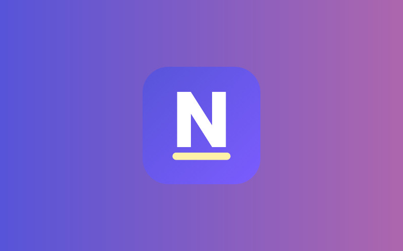

NoteAble: A Dyslexia-Friendly Study App
How two friends and I built a note-taking app that reads aloud, forgives spelling, and lets every learner choose how their notes look.

The Problem
Most note-taking tools quietly assume you can read quickly, spell confidently and keep up with a teacher who talks faster than you can write.
For students with dyslexia (often estimated at around one in ten people), each of those is a barrier. And the usual advice is basically “try harder”: work at adapting yourself to the material. We wanted the app to do the adapting instead, so NoteAble’s tagline ended up being the rule we designed everything around.
NoteAble adapts information instead of asking you to adapt to it.
NoteAble is a web app that turns classes, slides and reading into notes that are easier to read, hear and remember. It was our team’s entry for Samsung Solve for Tomorrow 2026. My friend Akash Anaganti and I built the prototype together, splitting the work equally, and Ashreta made our presentation slides and led the presenting.
Plants use photosynthesis to make food from sunlight.
Plants use pho·to·syn·the·sis to make food from sunlight.
What It Does
Capture
You can record a class and get live captions, take a photo of a whiteboard or a textbook page, import a PDF or Word file, or just draw your ideas on a sketchpad. The AI turns any of these into a structured note: the key idea, the important points, and the key words with plain meanings.
Read
Every note can be shown in whatever way works for you:
- Clearer fonts (Atkinson Hyperlegible, OpenDyslexic, Lexend and others), with adjustable letter, word, line and paragraph spacing
- Background tints, a focus ruler and a high-contrast mode
- Syllable breaks, and separate colours for b, d, p and q, the letters that get flipped most easily
- Read-aloud, with each word highlighted as it’s spoken
- Tap any word to hear it and see a one-line meaning and a picture
Write
Speak-to-write lets you dictate a note and have it tidied into clear sentences. The spelling help understands sound-it-out spelling, so becuz suggests “because”, and you can hear each suggestion before you pick it. Search is forgiving too: searching fotosinthesis still finds your photosynthesis note.
Study
With one tap you can simplify a hard paragraph, break it into steps, get an everyday example, take a quiz, make flashcards with pictures, or see it as a visual map. There’s also a deadlines page that counts down to homework and sends reminders, since keeping track of time is something a lot of dyslexic students struggle with.
Choose
A Simplified view shows only the essentials, with fewer buttons and less text on every page. Quick presets like Dyslexia Mode turn on a sensible set of reading aids in one go.
Principles We Kept Coming Back To
- Privacy first. Notes and recordings stay on the device. Text only goes to an AI when the student asks for help, and there’s an on-device AI option that never sends anything anywhere. API keys are never synced or exported.
- Choice over one-size-fits-all. Dyslexia affects everyone differently, so almost everything is a setting. Presets mean nobody has to flip twenty switches just to get started, though.
- Fewer interruptions. Pop-ups are tiring when reading already takes effort. NoteAble shows at most one suggestion a day, and the only exceptions are urgent things like deadline reminders.
- Everything can be heard. Any text, anywhere in the app, can be selected and read aloud.
How It’s Built
NoteAble is plain HTML, CSS and JavaScript with no build step, split into numbered scripts that load in order. Keeping it simple meant any of us could open a file and understand what it did.
- Accounts and sync: Firebase Authentication and Firestore, protected with App Check, so notes, settings and deadlines stay in step across devices.
- AI: students can use NoteAble AI (Gemini through Firebase AI Logic, no setup needed), bring their own key for Claude, ChatGPT or Gemini, or run the AI entirely on their own device with Chrome’s built-in AI or WebLLM.
- Speech: the browser’s speech recognition handles live captions, with an on-device Whisper option for privacy.
- Installable app: it works as a Progressive Web App, opens offline, and shows reminders as system notifications once it’s installed.
- Storage: recordings and photos live in the browser’s IndexedDB, and notes can be backed up as .ntnotes files or downloaded together as a zip.
Challenges
Hour-long classes
Browser speech recognition tends to just stop after a while, which ruined long recordings. So we made it restart automatically, save the transcript as it goes, keep the screen awake, and recover the recording if the page closes. Really long transcripts were also too big for the AI to read in one go, so NoteAble summarises them in parts first and then writes the note from those summaries.
Free AI limits
The free tier only allows a few requests a minute. Tapping through words or pressing a few buttons quickly sent bursts of requests and caused errors. We added a pacer that spaces requests out, a shared cool-down for when the AI is busy, and a Stop button that actually cancels a request instead of just hiding it.
Spelling help that gets how dyslexic students spell
A normal spell checker struggles with fizix or becuz, because the letters are too far from the real word. We turn words into rough sound-alike forms first (so “ph” and “f” count as the same, and “-tion” sounds like “shun”) and then compare those. We tested it on 37 real sound-it-out misspellings, and the intended word was in the top three suggestions for 35 of them.
Not reinventing security
An early version locked each account’s email address with the user’s password. That broke sign-in as soon as someone reset their password. Lesson learned: use the platform’s built-in, well-tested sign-in flows instead of inventing clever ones.
What I Learned
- Accessibility is mostly about getting rid of small annoyances: a button in the wrong place, a word you can’t hear, a pop-up at the wrong moment.
- Every feature costs screen space and attention. Some of our best changes removed buttons instead of adding them.
- Rate limits, flaky speech recognition and offline use turned out to matter as much as any feature, because they decide whether a student trusts the app in class.
- Building the app with Akash taught me to keep code readable and write decisions down, so we could each pick up where the other left off.
What’s Next
The most important next step is testing NoteAble with dyslexic students for a few weeks and changing it based on what they actually find helpful. After that, we’d like to add a personal word bank that turns the words you look up into flashcards.
NoteAble was made by Akash Anaganti, Aniruddha Bose and Ashreta. Akash and I built the prototype together, and Ashreta made the presentation and led our pitch.
Project Snapshot
- Project
- NoteAble
- Type
- Installable web app for taking and studying notes
- Technology
- HTML, CSS, JavaScript, Firebase, Gemini and on-device AI
- Team
- Aniruddha Bose, Akash Anaganti, Ashreta
- Competition
- Samsung Solve for Tomorrow 2026 (finalist)
- Try It
- noteable-study.pages.dev